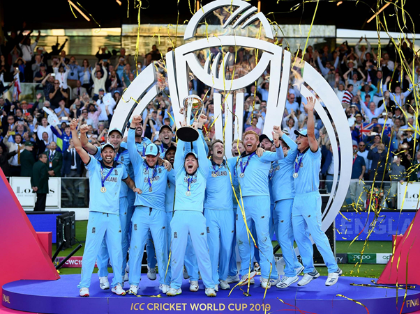

The ICC Cricket World Cup is the international championship of One Day International (ODI) cricket. The event is organised by the sport's governing body, the International Cricket Council (ICC), every four years, with first qualification rounds leading up to a semi-finals and then finals tournament. The tournament is one of the world's most viewed sporting events and is considered the "flagship event of the international cricket calendar" by the ICC.
The ICC Cricket World Cup is the international championship of One Day International (ODI) cricket. The event is organised by the sport's governing body, the International Cricket Council (ICC), every four years, with first qualification rounds leading up to a semi-finals and then finals tournament. The tournament is one of the world's most viewed sporting events and is considered the "flagship event of the international cricket calendar" by the ICC.
The first World Cup was organised in England in June 1975, with the first ODI cricket match having been played only four years earlier. However, a separate Women's Cricket World Cup had been held two years before the first men's tournament, and a tournament involving multiple international teams had been held as early as 1912, when a triangular tournament of Test matches was played between Australia, England and South Africa. The first three World Cups were held in England. From the 1987 tournament onwards, hosting has been shared between countries under an unofficial rotation system, with fourteen ICC members having hosted at least one match in the tournament.
The World Cup is open to all members of the International Cricket Council (ICC), although the highest-ranking teams receive automatic qualification. The remaining teams are determined via the World Cricket League and the ICC World Cup Qualifier. A total of twenty teams have competed in the eleven editions of the tournament, with fourteen teams competing in 2015; the recent 2019 tournament only had ten teams. Australia has won the tournament five times, India and West Indies twice each, while Pakistan, Sri Lanka and England have won it once each. The best performance by a non-full-member team came when Kenya made the semi-finals of the 2003 tournament.
List of World Cups
| Year | Winner | Score | Runner-up | Score | Result |
|---|---|---|---|---|---|
| 1975 | West Indies | 291-8 | Australia | 274 | West Indies won by 17 runs |
| 1979 | West Indies | 286–9 | England | 194 | West Indies won by 92 runs |
| 1983 | India | 183 | West Indies | 140 | India won by 43 runs |
| 1987 | Australia | 253-5 | England | 246-8 | Australia won by 7 runs |
| 1992 | Pakistan | 249-6 | England | 227 | Pakistan won by 22 runs |
| 1996 | Sri Lanka | 245–3 | Australia | 241 | Sri Lanka won by 7 wickets |
| 1999 | Australia | 133-2 | Pakistan | 132 | Australia won by 8 wickets |
| 2003 | Australia | 359–2 | India | 234 | Australia won by 125 runs |
| 2007 | Australia | 281-4 | Sri Lanka | 215–8 | Australia won by 53 runs |
| 2011 | India | 277-4 | Sri Lanka | 274–6 | India won by 6 wickets |
| 2015 | Australia | 186-3 | New Zealand | 183 | Australia won by 7 wickets |
| 2019 | England | 241 | New Zealand | 241-8 | Match tied after regular play and super over; England won on boundary count |
England are the current champions after winning the 2019 edition. The next tournament will be held in India in 2023.
